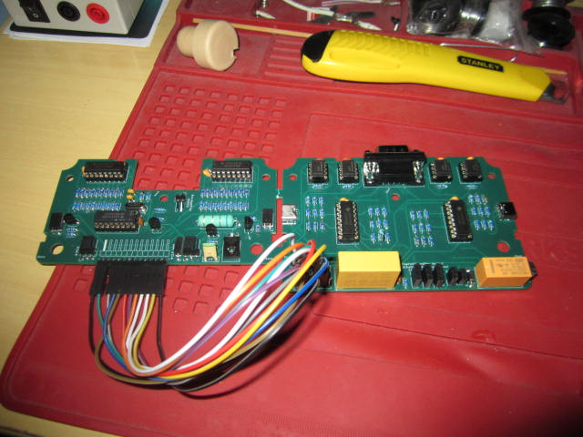

Itt található a készülék dokumentációja, és fejlesztési blogja.
Ahogy a raszter pásztázza a képernyőt, avval szinkronban kell a képet is betáplálni, illetve amikor eléri a képernyő szélét/alját, vissza kell küldeni a kezdőpozícióba. E készülék ezeket a jeleket adja ki, így megspórolva azt, hogy képforrásba külön VGA-vezérlőt építsünk bele. Ezentúl megadja azt is, hogy a raszter éppen milyen koordinátán található.
